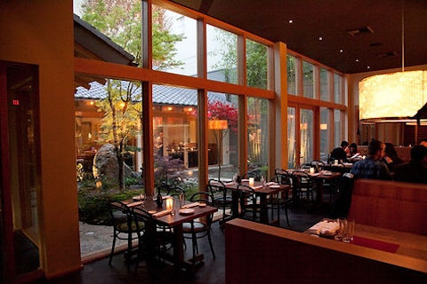
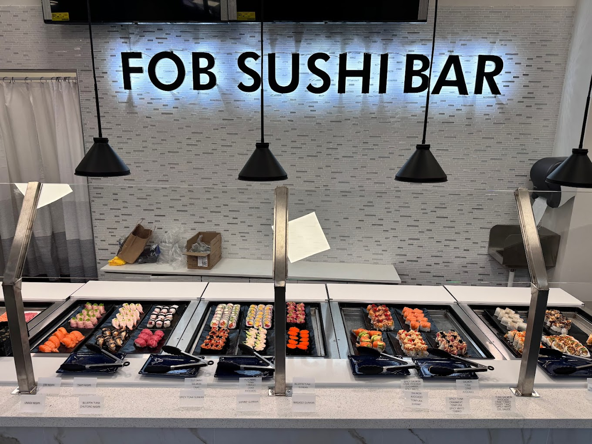

My favorite food is sushi.
The best spot for happy hour is Japonessa Momiji.
Here is their happy hour menu.
Here is a list of my favorite restaurants in the Greater Seattle Area (not in order).
Momiji
Ku Sushi
Japonessa
Sushi Blue
FOB Sushi Bar
1 / 3

Interior of Momiji in Capitol Hill.
2 / 3

Interior of FOB Sushi Bar, which is a self-serve sushi bar.